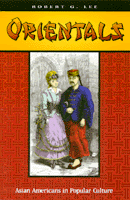

<body bgcolor="#FFFFFF" text="#000000" link="#0000FF" vlink="#CC0000" alink="#CC0000"><center><hr width="350" size="1" align="center" noshade>A compelling study of how the label "oriental" came into being<hr width="350" size="1" align="center" noshade><p><a href="https://cdcshoppingcart.uchicago.edu/Cart/ChicagoBook.aspx?ISBN=9781566396585&&PRESS=temple" target="_top">Buy this book!</a> | <a href="https://cdcshoppingcart.uchicago.edu/Cart/Cart.aspx?PRESS=temple" target="_top">View Cart</a> | <a href="https://cdcshoppingcart.uchicago.edu/Cart/Cart.aspx?PRESS=temple" target="_top">Check Out</a></p><p></p></center><!--none//--><h1>Orientals</h1>
<H2>Asian Americans in Popular Culture</H2>
<h3>Robert G. Lee</h3>
<P>cloth 1-56639-658-1 $64.50, Jun 99, <FONT COLOR=#990033>Out of Stock Unavailable</FONT>
<br>paper 1-56639-753-7 $29.95, <FONT COLOR=#990033>Available</FONT>
<br>Electronic Book 1-43990-571-1 $29.95 <FONT COLOR=#990033>Out of Stock Unavailable</FONT>
<BR> 288 pp
6x9
</P><h3 align="center"><P><font color="#996633">Best Book Award Winner Culture Studies/Popular Culture, Northeast Popular Culture/American Culture Association,
2000</font></P>
<P><font color="#996633">Honorable Mention for the John Hope Franklin Publication Prize for the best-published book in American Studies from the American Studies Association,
1999</font></P>
<P><font color="#996633">Best Book Award for the Social Construction of Race, The American Political Science Association,
1999</font></P>
</H3>
<BLOCKQUOTE><I>"</I>Orientals<I> is an indispensable book about the United States. In it, 'American culture' emerges as a site in which racial meanings about Asia and Asian-Americans are made and remade in relation to specific historical crises, whether the settling of the western frontier, the consolidation of the European immigrant working class, the establishment of the nuclear family and middle class domesticity, World War II, Cold War liberalism or the global restructuring of the economy."</I>
<BR>&#151<B>Lisa Lowe</B>, author of <I>Immigrant Acts: On Asian-American Cultural Politics</I><I></I></BLOCKQUOTE>
<P>Sooner or later every Asian-American must deal with the question "Where do you come from?" It is probably the most familiar if least aggressive form of racism. It is a tip-off to the persistent notion that people of Asian ancestry are not real Americans, that "Orientals" never really stop being loyal to a foreign homeland, no matter how long they or their families have been in this country. Confronting the cultural stereotypes that have been attached to Asian-Americans over the last 150 years, Robert G. Lee seizes the label "Oriental" and asks where <I>it</I> came from.
<P>The idea of Asians as mysterious strangers who could not be assimilated into the cultural mainstream was percolating to the surface of American popular culture in the mid-nineteenth century, when Chinese immigrant laborers began to arrive in this country in large numbers. Lee shows how the bewildering array of racialized images first proffered by music hall songsters and social commentators have evolved and become generalized to all Asian-Americans, coalescing in particular stereotypes. Whether represented as Pollutant, Coolie, Deviant, Yellow Peril, Model Minority, or Gook, the Oriental is portrayed as alien and a threat to the American family&#151the nation writ small.
<P>Refusing to balance positive against negative stereotypes, Lee connects these stereotypes to particular historical moments, each marked by shifting class relations and cultural crises. Seen as products of history and racial politics, the images that have prevailed in songs, fiction, films, and nonfiction polemics are contradictory and complex. Lee probes into clashing images of Asians as (for instance) seductively exotic or devious despoilers of (white) racial purity, admirably industrious or an insidious threat to native laborers. When Lee dissects the ridiculous, villainous, or pathetic characters that amused or alarmed the American public, he finds nothing generated by the real Asian-American experience; whether they come from Gold Rush camps or Hollywood films or the cover of <I>Newsweek,</I> these inhuman images are manufactured to play out America's racial myths.
<P><I>Orientals</I> comes to grips with the ways that racial stereotypes come into being and serve the purposes of the dominant culture.
<BR>&nbsp;<h2>Excerpt</h2><P>Excerpt available at <a href="http://www.temple.edu/tempress">www.temple.edu/tempress</a></p>
<BR>&nbsp;<h2>Reviews</h2>
<P><I>"Bob Lee makes a major contribution to cultural studies and to ethnic studies with this insightful, engaging, and original examination of anti-Asian imagery in the U.S. Lee shows how different historical moments produce markedly different images and how changes in ethnic stereotypes register and reflect broader structural and cultural transformations."</I>
<BR>&#151<B>George Lipsitz</B>, author of <I><a href="1418_reg.html" target="_top">The Possessive Investment in Whiteness: How White People Profit from Identity Politics</a></I> (Temple)
<P><I>"A compelling critique of race from an Asian American viewpoint.... Given the increasingly non-European composition of the U. S. population, Lee's work provides an excellent prism to view the flawed North American self-image."</I>
<BR>&#151<B><I>Booklist</I></B>
<p><I>"...an outstanding examination of Asian American stereotypes in nineteenth- and twentieth-century popular culture."</I>
<br>&#151<b><I>Journal of American Ethnic History</I></b>
<p><i>"</i>Orientals<i> is provocative in its argument regarding the role of anti-Asian racism in creating pan-white identities incorporating new European immigrants and in fostering the growth of caste and craft unions rather than organizations seeking to represent all workers."</i>
<br>&#151<b><i>The Journal of American History</i></b>
<BR>&nbsp;<h2>Contents</h2><P>
<p>Preface: Where Are You From?
<br>Introduction: Yellowface
<br>1. The "Heathen Chinee" on God's Free Soil
<br>2. The Coolie and the Making of the White Working Class
<br>3. The Third Sex
<br>4. Inner Dikes and Barred Zones
<br>5. The Cold War Origins of the Model Minority
<br>6. The Model Minority as Gook
<br>7. After LA
<br>8. Disobediant Citizenship: Deconstructing the Oriental
<br>Notes
<br>Index
</P><BR>&nbsp;<H2>About the Author(s)</H2>
<P><B>Robert G. Lee</B> is Associate Professor of American Studies, Brown University.</P>
<BR><H2>Subject Categories</H2>
<p><A HREF="/tempress/asian_amer.html" TARGET="_top">Asian American Studies</a>
<BR><A HREF="/tempress/race.html" TARGET="_top">Race and Ethnicity</a>
</p>
<BR><h2 class="inpageheading">In the series</H2>
<P><I><a href="http://www.temple.edu/tempress/asam_history.html" onMouseOver="window.status='Click for other books in this series!'; return true;" onMouseOut="window.status=''; return true;" target="_top">Asian American History and Culture</a></i>, edited by K. Scott Wong, Linda Trinh V�, and Cathy Schlund-Vials.
</p><p>Founded by Sucheng Chan in 1991, the <I>Asian American History and Culture</I>, series has sponsored innovative scholarship that has redefined, expanded, and advanced the field of Asian American studies while strengthening its links to related areas of scholarly inquiry and engaged critique. Like the field from which it emerged, the series remains rooted in the social sciences and humanities, encompassing multiple regions, formations, communities, and identities. Extending the vision of founding editor Sucheng Chan and emeriti editor Michael Omi and David Palumbo-Liu, series editors K. Scott Wong, Linda Trinh V�, and Cathy Schlund-Vials continue to develop a foundational collection that embodies a range of theoretical and methodological approaches to Asian American studies.</p>
<p align="center"><a href="https://cdcshoppingcart.uchicago.edu/Cart/ChicagoBook.aspx?ISBN=9781566396585&&PRESS=temple" target="_top">Buy this book!</a> | <a href="https://cdcshoppingcart.uchicago.edu/Cart/Cart.aspx?PRESS=temple" target="_top">View Cart</a> | <a href="https://cdcshoppingcart.uchicago.edu/Cart/Cart.aspx?PRESS=temple" target="_top">Check Out</a></p><p><font face="Arial" size="1"><a href="copyright.html" onMouseOver="window.status='Web Copyright Policy';return true;" onMouseOut="window.status=''" title="Web Copyright Policy">&copy;</a> 2015 <a href="http://www.temple.edu" target="new" onMouseOver="window.status='Link to Temple University home page';return true;" onMouseOut="window.status=''" title="Link to Temple University home page">Temple University</a>. All Rights Reserved. http://www.temple.edu/tempress/titles/1375_reg.html</font></p>